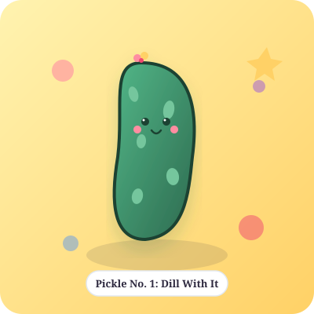
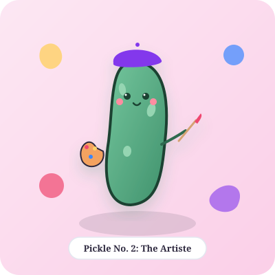
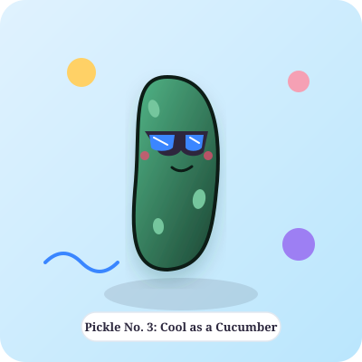
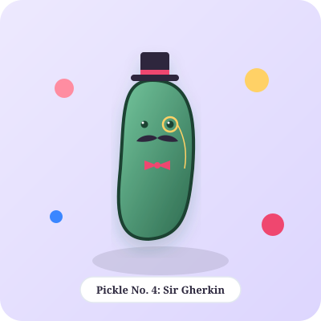
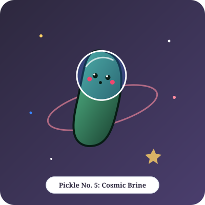
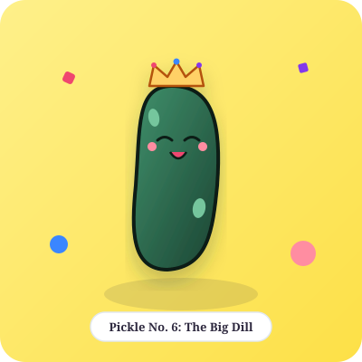

Placeholder

A whimsical showcase of doodles, illustrations, and playful wonders.
Gallery Preview in Progress: The main collection is currently being illustrated! In the meantime, enjoy these handcrafted pickle placeholders standing in for future original works.





